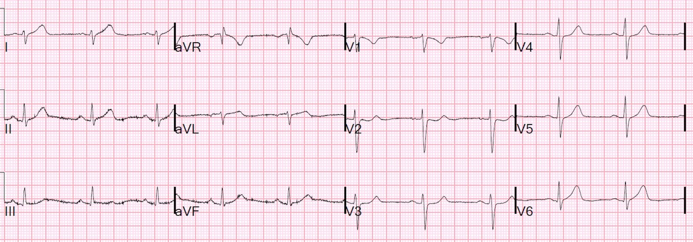
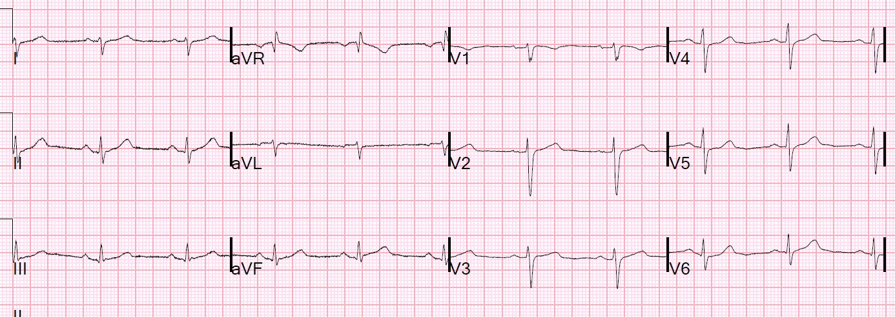
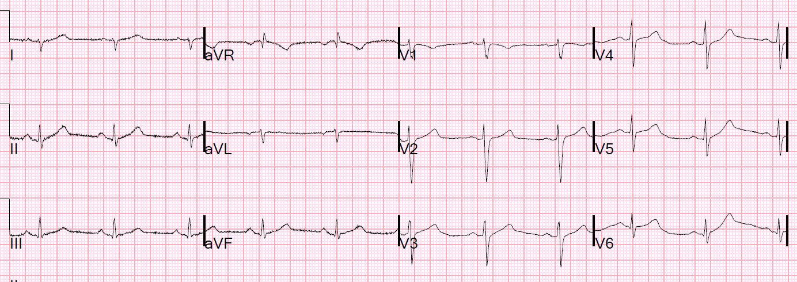
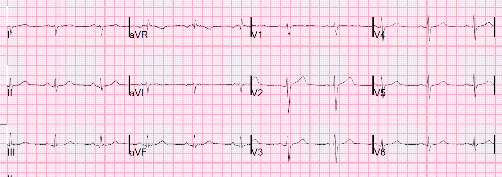
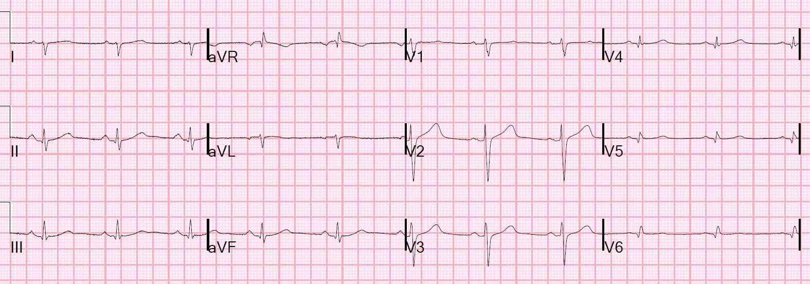
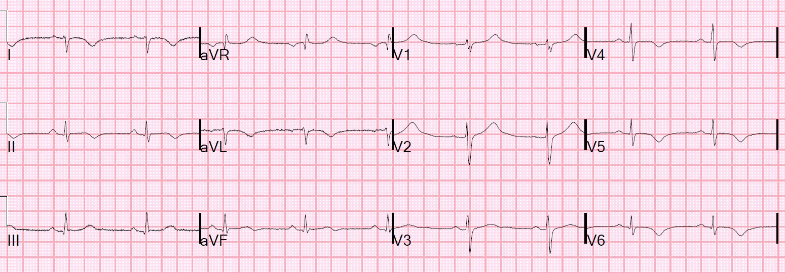
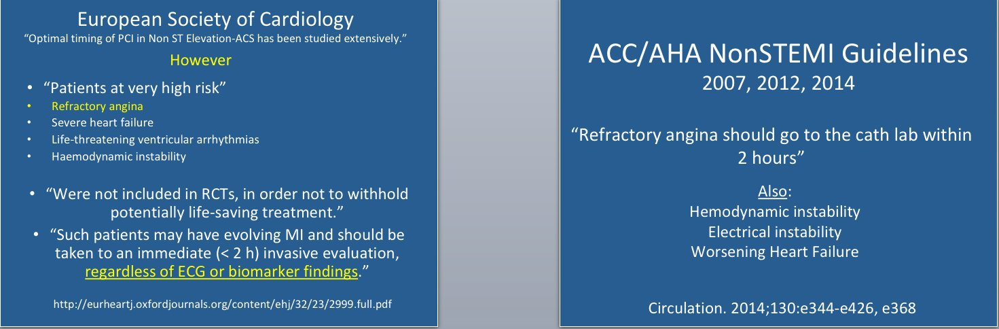
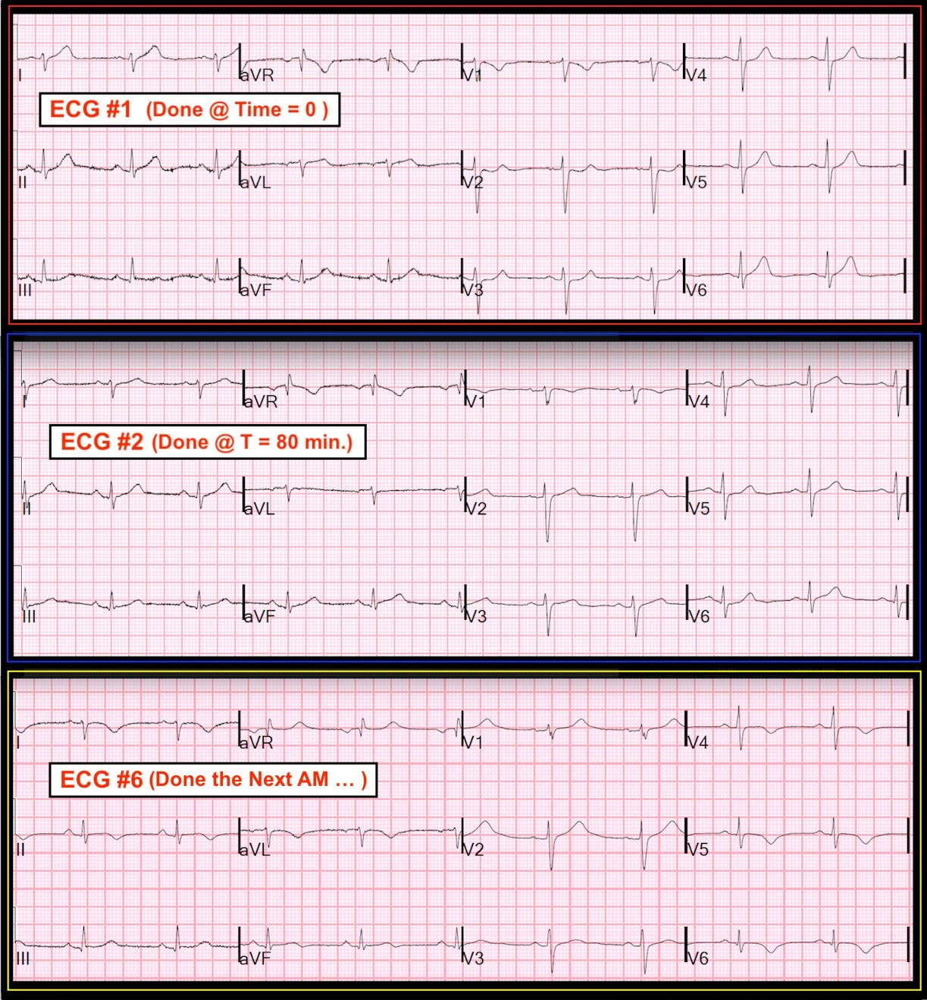

15/09/2018 — Một phụ nữ 30 mấy tuổi hoàn toàn khỏe mạnh bị đau ngực cấp — bài này chứa đầy thông tin !!!
Bản dịch tiếng Việt của bài "A completely healthy 30-something woman with acute chest pain — this post is loaded with info !!!" – Dr. Smith’s ECG Blog. Giữ nguyên toàn bộ 10 hình ảnh và 1 video của bản gốc.
Một phụ nữ trẻ trước đó khỏe mạnh đến khoa cấp cứu (ED) vì đau ngực bên phải và cảm giác đè nặng ngực khởi phát cấp tính đã một giờ, rất dữ dội, lan xuống cánh tay phải.
Đây là điện tâm đồ đầu tiên của cô tại khoa cấp cứu (thời điểm 0):


Nhận định của tôi: khi chưa có bất kỳ thông tin nào khác, tôi nhìn điện tâm đồ này và thấy nổi bật 3 đặc điểm: 1) sóng T ở chuyển đạo I là sóng T tối cấp (hyperacute). Nó quá lớn so với phức bộ QRS đó. 2) Sóng T ở V6 quá lớn; nó cao gần bằng sóng R, điều này rõ ràng là bất thường. 3) có ST chênh xuống dốc xuống nhẹ ở V2, là hình ảnh kinh điển của thiếu máu cục bộ/nhồi máu cơ tim thành sau. Cũng có một chút ST chênh xuống ở V3.
Cũng có trục lệch phải (S lớn hơn R ở chuyển đạo I)
Xem bài này:
Mười ca sóng T tối cấp ở V4-V6
Đây là nhồi máu cơ tim do tắc (Occlusion Myocardial Infarction, OMI) cho đến khi chứng minh được điều ngược lại.
Tôi không chắc điều này đã được nhận ra. Bệnh nhân được cho dùng aspirin. Siêu âm tại giường được thực hiện. Đây là mặt cắt trục ngắn cạnh ức:
Hình ảnh này khó diễn giải, nhưng tôi tin rằng nó phù hợp với điện tâm đồ: theo mắt tôi, nó cho thấy rối loạn vận động thành bên (ở phía bên phải hình).
Tôi không chắc điều này đã được nhận ra, và một số người có thể không đồng ý với cách diễn giải siêu âm này.
Cơn đau của bệnh nhân vẫn kéo dài.
Troponin đầu tiên lấy lúc đến viện có kết quả một giờ sau điện tâm đồ. Nó tăng nhẹ, ở mức 0,048 ng/mL (giới hạn trên tham chiếu, URL = 0,030 ng/mL)
Bệnh nhân được dùng NTG ngậm dưới lưỡi và điện tâm đồ ghi lại được thực hiện lúc 80 phút sau khi đến viện (trong trường hợp như thế này, cần ghi lại điện tâm đồ mỗi 15 phút).


Thực tế, có ST chênh lên nhẹ bình thường ở V2 và V3
Điện tâm đồ thay đổi động (dynamic) chứng minh đây là thiếu máu cục bộ đang diễn ra.
Đau ngực kéo dài, dù điện tâm đồ đã cải thiện, gợi ý thiếu máu cục bộ dai dẳng.
D-dimer âm tính, khiến bóc tách động mạch chủ hoặc thuyên tắc phổi (PE) ít có khả năng hơn nhiều (đây cũng là những nguyên nhân có thể gây tăng troponin, và bóc tách có thể gây nhồi máu cơ tim do bóc tách lan vào lỗ động mạch vành, nhưng PE rất khó xảy ra ở đây).
Bệnh nhân được dùng heparin và clopidogrel.
Troponin lần tiếp theo là 1,04 ng/mL.
Điện tâm đồ thứ 3 được ghi lúc 3 giờ sau khi đến viện:


Cơn đau tiếp tục.
Đã hội chẩn khoa tim mạch. Kế hoạch là nhập viện với truyền heparin liên tục.
Cơn đau vẫn kéo dài.
Troponin lần thứ 3 có kết quả 2,84 ng/mL.
Điện tâm đồ thứ 4 được ghi lúc 5 giờ sau khi đến viện:


Tiếp theo là một điện tâm đồ có vẻ được ghi với các chuyển đạo phía sau, nhưng không được ghi nhãn như vậy: (V4-V6 đặt ở lưng làm V7-V9)


Lưu ý rằng QRS ở V7-V9 rất nhỏ so với V1-V3.
V7-V9 đơn giản là các chuyển đạo đối diện với V1-V3, nhưng có rất nhiều không khí xen giữa.
Chúng có cực tính ngược lại: sóng R ở V1 là sóng Q ở V7 (ghi nhãn V4)
Điện thế thấp hơn nhiều.
Đây là lý do “tiêu chuẩn” ST chênh lên ở các chuyển đạo phía sau chỉ là 0,5 mm.
Các chuyển đạo phía sau
Khi không có bất kỳ ST chênh xuống (STD) nào ở V1-V3, khó có khả năng có STE ở V7-V9, dù vẫn có thể do các chuyển đạo phía sau ở gần thành sau nên ghi được STE.
Dữ liệu về các chuyển đạo phía sau, vốn không thật sự mạnh, cho thấy rằng:
1) một số nhồi máu cơ tim thành sau có STD ở V1-V3 mà không đồng thời có STE ở V7-V9
2) một số không có STD ở V1-V3 nhưng lại đồng thời có STE ở V7-V9; (các chuyển đạo phía sau đôi khi nhạy hơn)
3) Nhiều trường hợp không có cả hai và
4) Nhiều trường hợp có cả hai.
Trong ca này, STD đã hết. Nếu được ghi trong lúc có STD ở V1-V3, các chuyển đạo phía sau có lẽ đã có khả năng dương tính cao hơn nhiều.
Tuy nhiên, điện tâm đồ phía sau này chỉ có ý nghĩa học thuật. Bệnh nhân đã được chứng minh nhồi máu cơ tim (troponin tăng mà không giải thích được bằng nguyên nhân khác) kèm đau kéo dài không kiểm soát được và cần vào phòng thông tim (cath lab) ngay. Ngoài ra còn có điện tâm đồ dương tính và siêu âm dương tính! Nếu điện tâm đồ phía sau này KHÔNG cho thấy bất kỳ ST chênh lên thành sau nào, bệnh nhân vẫn cần được đưa vào phòng thông tim.
Chụp mạch vành
Bệnh nhân được đưa vào phòng thông tim vào thời điểm này. Có tắc gần hoàn toàn nhánh bờ tù thứ 1 (OM-1) 2,0 mm xuất phát từ động mạch mũ. Hình ảnh gợi ý bóc tách động mạch vành tự phát (SCID) [người dịch: nguyên văn ghi “SCID”, viết tắt thường dùng là SCAD]. [xem bài này: Một phụ nữ 30 mấy tuổi chơi thể thao bị cảm giác đè nặng ngực sau xương ức cấp tính] Tất cả các động mạch vành khác đều bình thường. Không có bằng chứng bệnh động mạch vành, càng ủng hộ SCID.
Can thiệp:
“Nhánh OM-1 được luồn dây dẫn Luge và thực hiện nhiều lần bơm bóng tới 12 ATM bằng bóng 2,0 X 30 mm. Thủ thuật này tái lập dòng chảy TIMI III với bóc tách tồn lưu không gây hạn chế dòng chảy. Đau ngực gần như hết khi kết thúc thủ thuật.”
Tại sao không đặt stent?
Bạn tôi, cũng là đồng nghiên cứu viên và bác sĩ tim mạch can thiệp tại Mayo, Yader Sandoval (@yadersandoval) giải thích (tôi diễn đạt lại):
“Ở hầu hết các phòng thông tim, stent nhỏ nhất là 2,25 mm (Medtronic hiện có loại mới 2,0 mm), vì vậy nếu tổn thương nằm ở một mạch 2,0 mm, nhiều người sẽ xem kích thước này về mặt kỹ thuật là quá nhỏ để đặt stent, và chỉ đơn giản nong bóng đơn thuần (POBA). Những người khác có thể cố gắng lách vào một stent nhỏ.”
Troponin I đỉnh là 20 ng/mL (đây không phải ổ nhồi máu nhỏ. 2/3 số STEMI có troponin I đỉnh lớn hơn 10 ng/mL).
Đây là điện tâm đồ sáng hôm sau:


Có sóng T lớn ở V1 và V2. Đây là sóng T tái tưới máu thành sau!
Xem bài báo của Driver, Shroff và Smith về sóng T tái tưới máu thành sau
Sóng T tái tưới máu thành sau được giải thích như sau:
–Nếu ghi từ thành sau, tái tưới máu thành sau sẽ biểu hiện bằng sóng T đảo ngược (cực tính âm).
–Sóng T cực tính âm của thành sau sẽ có cực tính dương khi ghi từ thành trước (V2)
–Các sóng dương này cộng thêm vào sóng T dương bình thường do tái cực thành trước (thành trước không bị ảnh hưởng bởi thiếu máu cục bộ), tạo ra sóng T dương gấp đôi.
–Do đó, tái tưới máu thành sau tạo ra sóng T lớn hơn bình thường.
Siêu âm tim còn tệ hơn
Giảm chức năng tâm thu thất trái-mức độ nhẹ đến trung bình.
Phân suất tống máu thất trái ước tính là 40%.
Rối loạn vận động thành khu trú-trước bên/thành trước.
Rối loạn vận động thành khu trú-dưới bên.
Bằng chứng thiếu máu cục bộ/nhồi máu ở một vùng chi phối rộng của động mạch mũ.
Những điểm cần học:
1) Hãy học cách nhận ra những biểu hiện điện tâm đồ tinh tế của OMI. Đây là những dấu hiệu rất đặc hiệu. Chúng không phải là “Bất thường tái cực không đặc hiệu” (như kết quả đọc của máy tính và của bác sĩ đọc lại).
2) Vùng chi phối của động mạch mũ là vùng “im lặng về điện tâm đồ” của tim. Rất thường gặp trường hợp điện tâm đồ hoàn toàn bình thường khi tắc cấp động mạch mũ hoặc một trong các nhánh của nó, ngay cả khi nhồi máu cơ tim diện rộng.
3) Các chuyển đạo phía sau có thể giúp phát hiện một nhồi máu cơ tim mà nếu không thì im lặng về điện tâm đồ. Ngưỡng chẩn đoán là 0,5 mm ở một chuyển đạo, nhưng việc không có bất kỳ STE nào ở các chuyển đạo phía sau không loại trừ nhồi máu cơ tim. Hơn nữa, nếu có ST chênh xuống ở V1-V3, các chuyển đạo phía sau có thể tạo ra sự yên tâm sai lầm.
4) Bất kỳ bệnh nhân nào có đau ngực đột ngột và troponin dương tính đều phải được xem là có thể bị nhồi máu cơ tim cấp, thuyên tắc phổi hoặc bóc tách động mạch chủ. Khi không có khó thở (SOB) hay nhịp nhanh, và có bằng chứng OMI trên điện tâm đồ, thì OMI là chẩn đoán cho đến khi chứng minh được điều ngược lại. Không cần siêu âm để chẩn đoán. D-dimer âm tính đã loại trừ hiệu quả PE, còn bóc tách động mạch chủ thì không phù hợp và hiếm hơn nhiều. Do đó, đây là nhồi máu cơ tim cấp cho đến khi chứng minh được điều ngược lại, và nếu cơn đau không thể kiểm soát chỉ bằng điều trị nội khoa, bệnh nhân phải được đưa cấp cứu vào phòng thông tim trong vòng 2 giờ!!
Đây không chỉ là ý kiến của tôi, mà là khuyến cáo trong các hướng dẫn của Trường môn Tim mạch Hoa Kỳ/Hội Tim mạch Hoa Kỳ (ACC/AHA) và của Hội Tim mạch châu Âu (ESC).
ESC nhấn mạnh rằng những bệnh nhân như vậy, nếu nghi ngờ ACS là nguyên nhân gây ra triệu chứng đang tiếp diễn, phải được đưa cấp cứu vào phòng thông tim ngay cả khi không có dấu hiệu trên điện tâm đồ hay dấu ấn sinh học. Nói cách khác, bạn không cần điện tâm đồ thiếu máu cục bộ hay thậm chí troponin dương tính!


Thực tế trong xử trí bệnh nhân
Bất chấp các khuyến cáo của ESC và ACC/AHA, từ kinh nghiệm cá nhân qua trao đổi với nhiều người thông qua blog này và email của blog, tôi ngờ rằng hiếm khi bệnh nhân NonSTEMI được đưa cấp cứu vào phòng thông tim, ngay cả khi họ vẫn còn đau, trừ khi có ST chênh lên đủ tiêu chuẩn chẩn đoán.
Điều này được ủng hộ bởi một phân tích gộp lớn về NonSTEMI cho thấy 25% trong số 40.000 bệnh nhân được chụp mạch vành vào ngày hôm sau vì NonSTEMI có một động mạch bị tắc hoàn toàn (1). Như vậy, một tỷ lệ rất lớn trong tất cả bệnh nhân có OMI KHÔNG được đưa vào phòng thông tim rất sớm như khuyến cáo của các hướng dẫn.
Tôi tin rằng điều này là do niềm tin dai dẳng vào một sự phân đôi STEMI-NonSTEMI có thật.
Xem bài giảng này: The False STEMI-NonSTEMI Dichotomy (Sự phân đôi STEMI-NonSTEMI sai lầm)
Hoặc đọc Tuyên ngôn OMI (OMI Manifesto): Bản PDF của Tuyên ngôn OMI (The OMI Manifesto)
(1) Khan và cs. Impact of total occlusion of culprit artery in acute non-ST elevation myocardial
infarction: a systematic review and meta-analysis. Tạp chí European Heart J, 2007. 38, 3082-3089.
Phần kết
Hiện chưa rõ sự chậm trễ này cuối cùng sẽ ảnh hưởng thế nào đến chức năng cơ tim. Động mạch dường như đã bị tắc, hoặc gần tắc, trong khoảng 6 giờ. Một lượng nhỏ tưới máu từ dòng chảy TIMI-1 hoặc từ bất kỳ tuần hoàn bàng hệ nào có thể giữ cho phần lớn cơ tim còn sống cho đến khi được tái tưới máu, và tình trạng choáng cơ tim cấp do thiếu máu cục bộ có thể gây ra một vùng rối loạn chức năng cơ tim rộng (như chúng ta thấy ở đây), mà phần lớn có thể hồi phục. Mặt khác, nó cũng có thể không hồi phục. Nếu không có thêm dữ liệu như MRI, không thể biết trong những giờ đầu sau thiếu máu cục bộ/nhồi máu liệu rối loạn chức năng có vĩnh viễn hay không. Thời gian sẽ trả lời: siêu âm tim giai đoạn hồi phục lúc 6 tuần có thể cho thấy chức năng tốt hơn nhiều, hoặc có thể cho thấy không hồi phục.
Xem bài này:
Mười ca sóng T tối cấp ở V4-V6
Xem các bài sau về tắc động mạch mũ tinh tế (nhồi máu cơ tim do tắc — OMI):
Circumflex Occlusion May be Subtle or Invisible on the ECG (Tắc động mạch mũ có thể tinh tế hoặc không thấy được trên điện tâm đồ)
Nhồi máu cơ tim cấp bị bỏ sót, có tắc động mạch vành, bằng chứng chỉ là sóng T đảo ngược ở V2 và ST chênh xuống tiến triển ở V3
Persistent Chest Pain, an Elevated Troponin, and a Normal ECG. At midnight. (Đau ngực kéo dài, troponin tăng và điện tâm đồ bình thường. Lúc nửa đêm.)
Chest pain and a non-diagnostic ECG. No worries, right? (Đau ngực và điện tâm đồ không giúp chẩn đoán. Không có gì phải lo, đúng không?)
OMI Can be Diagnosed by “Pseudonormalization of ST Segments” (OMI có thể được chẩn đoán nhờ “giả bình thường hóa đoạn ST”)
RBBB và sóng T tối cấp đảo ngược ở V3. Đừng để các chuyển đạo phía sau âm tính làm bạn đổi ý!
Inferior ST depression in ACS is reciprocal to ST elevation in aVL (ST chênh xuống thành dưới trong ACS là thay đổi soi gương của ST chênh lên ở aVL)
ST-T bất thường ở V1-V3. Đó là gì? Nhiều tình tiết thú vị và giàu thông tin trong ca này.
An Emergency Physician Texted Me This ECG, Asking for Help in Interpretation and for Advice in Management (Một bác sĩ cấp cứu nhắn cho tôi điện tâm đồ này, nhờ giúp diễn giải và xin lời khuyên xử trí)
ST depression limited to Inferior leads is reciprocal to high lateral wall and represents STEMI — missed MI, sent home, arrested at home and resuscitated (ST chênh xuống chỉ ở các chuyển đạo dưới là soi gương của thành bên cao và biểu hiện STEMI — nhồi máu cơ tim bị bỏ sót, cho về nhà, ngừng tim tại nhà và được hồi sức)

———————————————————–
Bình luận của KEN GRAUER, MD (15/9/2018):
———————————————————–
Bài học của ca này được làm nổi bật trong phần Những điểm cần học do Dr. Smith đưa ra. OMI sẽ tiếp tục bị bỏ sót, ngay cả bởi bác sĩ tim mạch — chừng nào các bác sĩ lâm sàng còn bám vào các định nghĩa cũ và từ chối chấp nhận điều sáng suốt đã được viết trong Hướng dẫn ACC/AHA/ESC, trong đó nêu rõ: Khi nghi ngờ ACS là nguyên nhân gây ra triệu chứng đang tiếp diễn — những bệnh nhân như vậy phải được đưa cấp cứu vào phòng thông tim, ngay cả khi không có dấu hiệu trên điện tâm đồ hay dấu ấn sinh học.
- Và, khi hoặc dấu hiệu trên điện tâm đồ hoặc dấu ấn sinh học có mặt — nhu cầu thông tim khẩn càng trở nên lớn hơn nhiều! Điều đáng tiếc nhất của ca này — là cả troponin tăng và thay đổi điện tâm đồ cấp đều có mặt, nhưng lại không được nhận ra và/hoặc xử trí.
- Một điều nữa không được nhận thức đầy đủ trong ca này — là thực tế rằng ở bệnh nhân có OMI đang diễn ra, diễn tiến điện tâm đồ cấp có thể xảy ra chỉ sau vài phút sau đó: 80 phút giữa điện tâm đồ #1 và điện tâm đồ #2 là quá lâu để chờ đợi …
Phần còn lại trong bình luận của tôi sẽ tập trung vào so sánh 3 bản ghi then chốt trong ca này (Hình 1).


—————————————
Điện tâm đồ #1 — ghi lúc đến khoa cấp cứu (Thời điểm = 0), ở một phụ nữ khoảng 30 tuổi đến viện trong vòng 1 giờ sau khi khởi phát đau ngực dữ dội mới xuất hiện:
- Như Dr. Smith đã nêu — các dấu hiệu đáng lo ngại gồm sóng T tối cấp ở chuyển đạo 1 (tức chuyển đạo I) — một sóng T tối cấp khác ở chuyển đạo V6 (rõ ràng cao hơn mức đáng có khi xét đến phức bộ QRS ở chuyển đạo này) — và, ST chênh xuống bất thường ở V2 và V3.
- ĐIỂM THEN CHỐT (PEARL) #1: Khi có các dấu hiệu điện tâm đồ bất thường rõ ràng ở nhiều chuyển đạo (như Dr. Smith đã làm nổi bật ở đây) — Hãy xem đặc biệt kỹ các chuyển đạo còn lại vì: i) Nếu làm vậy, bạn thường sẽ tìm thấy thêm bất thường (dù tinh tế hơn); và, ii) Càng nhiều chuyển đạo có dấu hiệu điện tâm đồ bất thường — kết luận của bạn rằng OMI thực sự đang tiến triển càng được ủng hộ mạnh mẽ hơn!
- Trong Hình 1 — sóng T ở chuyển đạo aVL cũng rất có thể là sóng T tối cấp. Cần nhớ rằng trục mặt phẳng trán lệch nhiều sang phải. Trong những trường hợp như vậy, trục sóng T ở các chuyển đạo chi như aVL thường đi sát theo trục QRS. Nói cách khác, một dấu hiệu bình thường thường gặp ở bệnh nhân có trục mặt phẳng trán thẳng đứng (dẫn đến phức bộ QRS chủ yếu âm ở chuyển đạo aVL) — là sóng T ở aVL cũng đảo ngược. Thay vào đó, sóng T ở aVL trong Hình 1 rõ ràng dương, và có vẻ hơi lớn hơn mức đáng có so với sóng r rất nhỏ ở chuyển đạo này. Tôi xin nhấn mạnh rằng nếu là một dấu hiệu đơn độc — tôi sẽ không coi trọng nhiều sóng T dương này ở chuyển đạo aVL. Nhưng trong bối cảnh có 4 chuyển đạo bất thường rõ ràng (như đã nêu ở gạch đầu dòng thứ 1 phía trên), cùng với thay đổi ST-T tối cấp rõ ràng ở chuyển đạo “bên cao” còn lại (tức là chuyển đạo I) — chuyển đạo aVL cũng rất có thể bất thường.
- ST-T ở chuyển đạo III của Hình 1 rõ ràng dẹt. Dù nếu là một dấu hiệu đơn độc thì điều này không nhất thiết là bất thường — trong bối cảnh 5 chuyển đạo bất thường đã nêu ở trên, tôi diễn giải ST-T dẹt ở chuyển đạo III này là phù hợp với một thay đổi soi gương tinh tế. Liệu đoạn ST (trước sóng T dương) ở chuyển đạo aVF có nên được xem là “thẳng đuỗn” hay không thì vẫn còn để ngỏ …
- ĐIỀU CỐT LÕI về Hình 1: Như Dr. Smith đã nêu — ở một bệnh nhân có đau ngực mới khởi phát mang tính chất thiếu máu cục bộ, sự kết hợp các dấu hiệu điện tâm đồ bất thường trong bản ghi này cần được xem là chỉ điểm OMI cho đến khi chứng minh được điều ngược lại.
—————————————
Điện tâm đồ #2 — được ghi 80 phút sau điện tâm đồ #1.
- Như Dr. Smith đã nêu — rõ ràng đã có thay đổi ở ST-T trên nhiều chuyển đạo. Dù vậy, nếu chỉ xét riêng — điện tâm đồ thứ 2 này trông không quá đáng lo ngại.
- ĐIỂM THEN CHỐT (PEARL) #2: Mục đích của việc ghi các điện tâm đồ liên tiếp ở bệnh nhân nghi ngờ hội chứng vành cấp đang tiến triển — là NẾU việc so sánh từng chuyển đạo giữa các bản ghi liên tiếp xác nhận có thay đổi (không phải do thay đổi trục hay do khác biệt khi đặt điện cực) — thì đó là một thay đổi điện tâm đồ động, mà như Dr. Smith đã nêu, xác nhận sự hiện diện của thiếu máu cục bộ đang diễn ra.
- ĐIỂM THEN CHỐT (PEARL) #3: Việc xác định CÓ HAY KHÔNG thay đổi giữa các bản ghi liên tiếp sẽ dễ dàng hơn nhiều khi bạn đặt 2 bản ghi cần so sánh cạnh nhau. Chẳng phải sự khác biệt giữa điện tâm đồ #1 và điện tâm đồ #2 trở nên rõ ràng trong Hình 1 về hình dạng ST-T ở các chuyển đạo I, III, aVL, V2, V3 và V6 hay sao?
- ĐIỂM THEN CHỐT (PEARL) #4: Khi bạn so sánh các bản ghi liên tiếp theo từng chuyển đạo — thì những dấu hiệu điện tâm đồ ban đầu có vẻ tinh tế thường sẽ cho thấy thay đổi rõ ràng. Ví dụ — sóng T ở chuyển đạo I của điện tâm đồ #2 rõ ràng thấp hơn so với ở điện tâm đồ #1. Và, nhận định của tôi rằng hình dạng ST-T ở chuyển đạo III và aVL trong điện tâm đồ #1 là bất thường được xác nhận bởi thực tế là dù trục không thay đổi, sóng T ở chuyển đạo III giờ đã dương hơn ở điện tâm đồ #2, và sóng T giờ dẹt hơn ở chuyển đạo aVL.
—————————————
Điện tâm đồ #6 — ghi vào sáng hôm sau ở bệnh nhân này.
- Như Dr. Smith đã nêu — giờ đây có thay đổi ST-T do tái tưới máu ở nhiều chuyển đạo. Hãy dành chút thời gian xem xét từng chuyển đạo trong 12 chuyển đạo, tập trung vào thay đổi tiến triển của ST-T khi bạn đi từ điện tâm đồ #1 sang điện tâm đồ #2 rồi sang điện tâm đồ #6 ghi vào sáng hôm sau.
- ĐIỂM THEN CHỐT (PEARL) #5: Giờ hãy xem lại điện tâm đồ #2 — và hình dung đây là điện tâm đồ duy nhất mà bạn thấy lúc đầu trong ca này. Bạn sẽ diễn giải điện tâm đồ #2 thế nào trong bối cảnh này? Câu trả lời cho câu hỏi này minh họa một điểm thường không được nhận thức đầy đủ là ở khoảng giữa giai đoạn ST-T tối cấp — và — giai đoạn tái tưới máu mạch vành tự phát (hoặc do điều trị) — điện tâm đồ có thể trông bình thường một cách đánh lừa… Đó là lý do bối cảnh lâm sàng, các bản ghi liên tiếp, siêu âm tim khẩn (Stat Echo) trong lúc đau ngực, dấu ấn sinh học, và so sánh từng chuyển đạo giữa các điện tâm đồ là vô cùng thiết yếu để phát hiện những ca OMI kém rõ ràng hơn.
Chúng tôi xin cảm ơn Dr. Smith vì ca giảng dạy xuất sắc này!